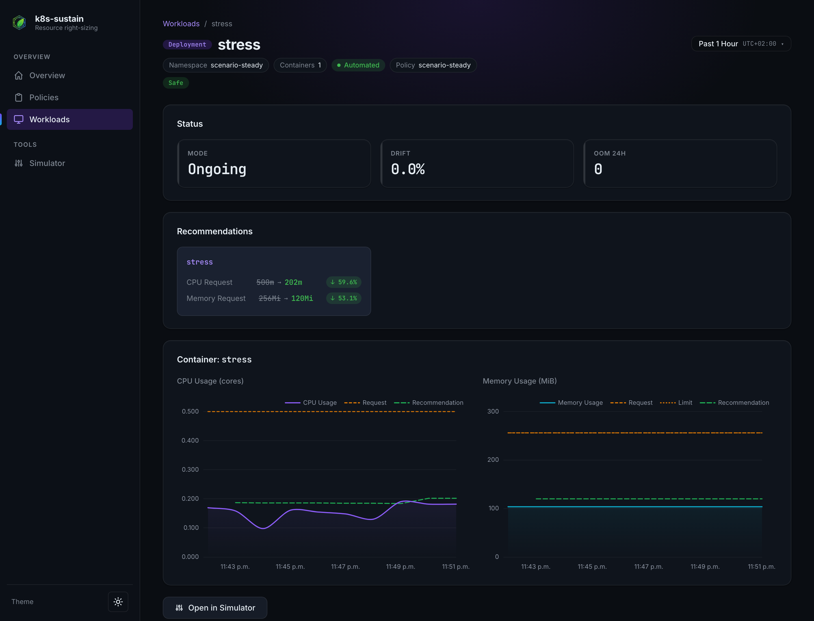

Open source · Kubernetes operator
Right-size Kubernetes workloads. Automatically.¶
k8s-sustain reads the CPU and memory your containers actually use from Prometheus and turns that history into requests and limits — applied in place, with no rolling restarts on modern clusters and no manual tuning.
Why it matters¶
Over-provisioning is the quiet default in most clusters, and it has a cost beyond the cloud bill.
Idle capacity is billed¶
Requests are set from worst-case guesses and rarely revisited. Every unused core and gigabyte is still reserved, scheduled and paid for.
Idle capacity burns energy¶
Over-provisioned nodes draw power, generate heat and drive demand for more hardware, adding to the footprint of cloud infrastructure.
Right-sizing for everyone¶
From a solo developer's side project to a platform team running thousands of workloads: free, open source and no manual tuning.
We believe resource optimisation should be accessible to everyone. Every cluster that right-sizes its workloads wastes less energy and needs fewer machines to do the same job.
How it works¶
One annotation opts a workload into a Policy. From there the pipeline runs on its own.
Observe¶
Prometheus recording rules aggregate per-container CPU and memory usage by workload. Nothing to instrument.
Recommend¶
The controller takes a configurable percentile over the lookback window, adds headroom, respects min/max clamps, OOM floors and autoscaler targets.
Apply¶
The admission webhook injects resources into new pods; the controller resizes running ones in place (k8s ≥ 1.33) or recycles them behind their PodDisruptionBudget.
The annotation is honoured on the pod template, on the workload's own metadata.annotations, or on its Namespace — most specific first. See the Annotation reference for precedence and the opt-out escape hatch.
Two update modes¶
Choose per workload kind how far k8s-sustain may go.
OnCreate on every new pod
The mutating admission webhook injects the cached recommendation before the pod is scheduled. Running pods are never touched.
Ongoing on a configurable interval
Everything OnCreate does, plus the controller brings running pods up to date: in place on k8s ≥ 1.33, PDB-respecting eviction otherwise.
Supported in both modes
DeploymentStatefulSetDaemonSetArgo RolloutJobCronJob
CronJob, Job and bare-pod workloads are never evicted: their running pods are only ever resized in place, since eviction would discard in-flight work and nothing would recreate a bare pod. See Update modes.
Built for production clusters¶
Every safeguard a platform team expects, and nothing that touches your GitOps-managed specs.
-
Percentile-based recommendations
p50 through p99, configurable per policy and per resource, with a headroom buffer on top of the observed value.
-
In-place pod updates
Zero-restart resizes through the
pods/resizesubresource when the cluster supports it, PDB-respecting eviction otherwise. -
GitOps-safe by design
Workload specs are never patched. Resources reach pods only through admission and resize, so Argo CD and Flux never see drift.
-
Recommend-only mode
Dry-run globally or per policy: recommendations are computed, cached and logged without touching any workload.
-
OOM-aware memory floors
An
OOMKilledcontainer re-triggers reconciliation immediately and bumps the memory floor, VPA-style. -
Autoscaler coordination
Requests are shaped so HPA and KEDA utilisation targets stay meaningful instead of fighting the right-sizer.
-
Per-container granularity
Sidecars and init containers get their own recommendation, clamped by the policy's min and max.
-
Web dashboard
Explore policies, chart real usage against requests, and simulate percentile or headroom changes before applying them.
-
Authenticated Prometheus
Bearer token, basic auth, custom headers and TLS, including multi-tenant Thanos, Mimir and Cortex gateways.
See it in action¶
The dashboard shows current requests against observed usage and what each policy would change.

Explore the docs¶
-
Install the chart and apply your first policy in five minutes.
-
Full API reference for the
Policyresource. -
How to opt a workload into a policy, and how to opt one out.
-
k8s-sustain start,webhookanddashboardflags. -
Controller, webhook and dashboard, and how they share one pipeline.
-
Signed images, SBOMs and SLSA provenance for every release.